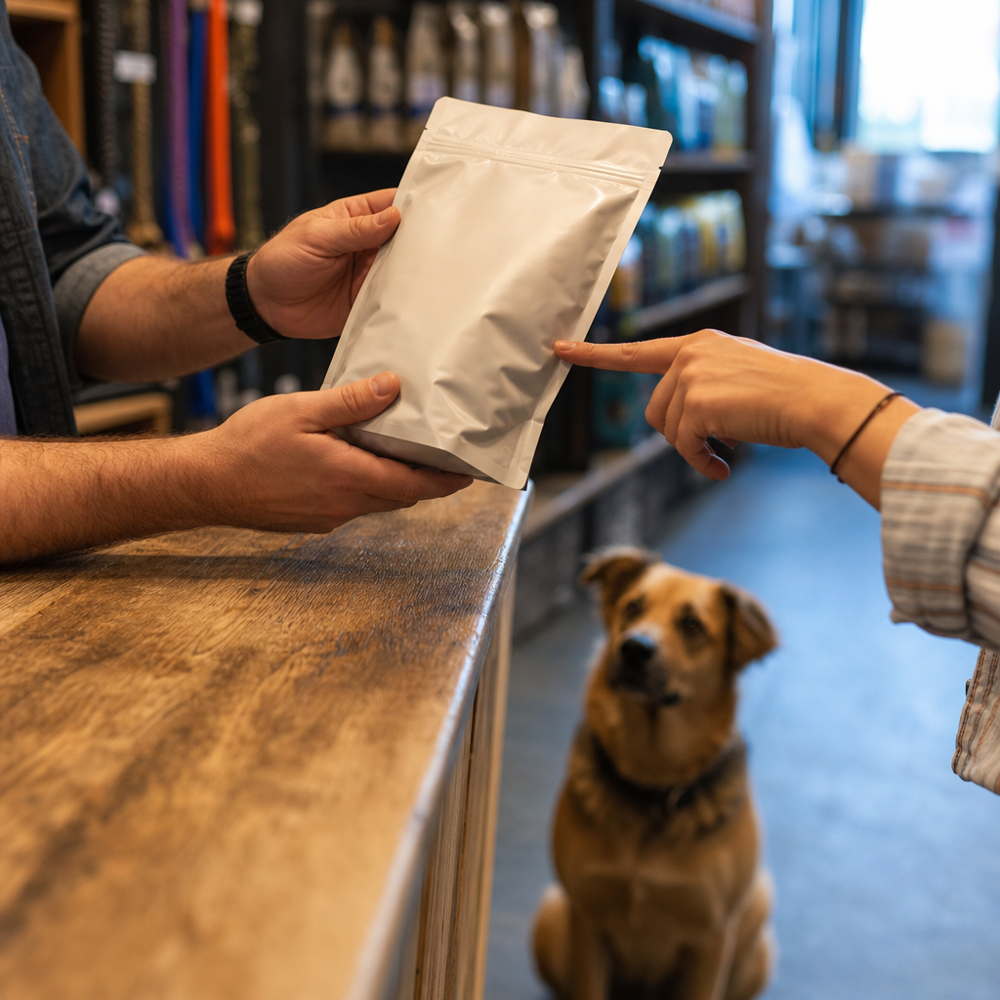

Raw and fresh
Frozen raw, freeze-dried and gently cooked, across more brands and proteins than anywhere else nearby. Cold chain kept properly from the case to your car.
Two shops, ten minutes apart, built around a freezer wall. Fromm lists us as carrying the largest raw-diet selection in the area — but the selection is not the point. Knowing which part of it is right for your animal is.
None of this makes a food bad. It makes the bag a poor way to judge one. These are the rules the words are printed under.
A rendered, dried protein concentrate with the water and fat removed. It can be an excellent ingredient. The label will not tell you which kind you have.
Under federal labelling rules, a "with" claim needs the named ingredient to be only three percent of the food. The picture on the front is not a measurement.
Means the ingredients were not chemically synthesised, vitamins and minerals aside. It is a sourcing statement, not a quality one, and it is unregulated by comparison with what people assume it means.
Protein and fat are printed as minimums, fibre and moisture as maximums. Every number on that panel is a boundary the food promises not to cross, not the amount actually in it.
We will read it with you at the counter, ask what your animal is actually like — the coat, the energy, the digestion, the age — and tell you honestly whether changing anything is worth it. Sometimes the answer is no.
Nutritional counselling, no chargeFrozen raw, freeze-dried and gently cooked, across more brands and proteins than anywhere else nearby. Cold chain kept properly from the case to your car.
Baked treats made for dogs rather than for the people buying them. Birthdays handled, with enough notice.

A full cat side — food, litter, supplements — and the same counter conversation, which cats need more of than dogs do.
Bristow Center Drive and Heathcote Boulevard, both open until seven. Order online for same-day local delivery, curbside, or no-contact pickup — or come in and let somebody meet your dog. We run adoption weekends through the year and would rather you left with the right food than the expensive one.
An unsolicited design concept for Miss Kibbles, prepared by Ohtari Labs. This is not their website.